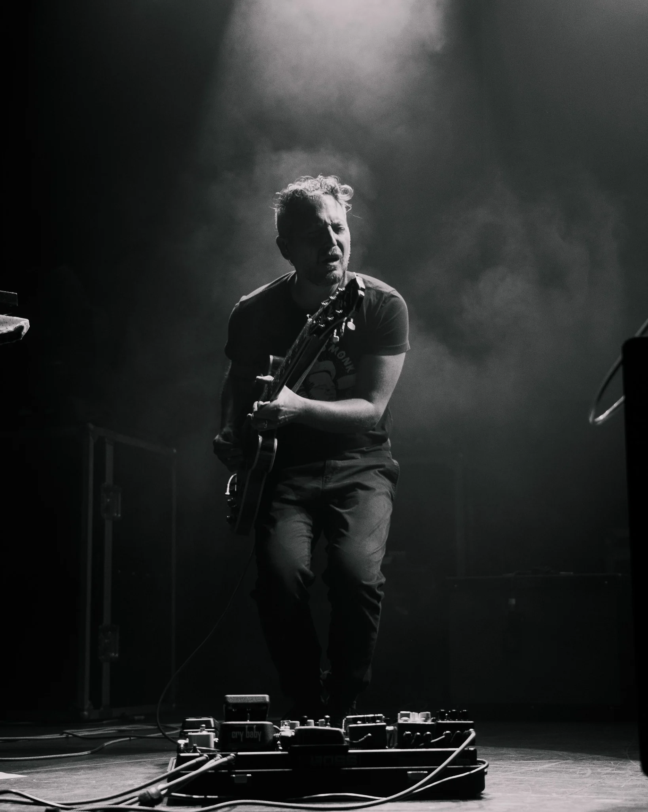

Biography
Tim Conley / MAST

Tim Conley is a Philadelphia-born, Los Angeles-based jazz musician, composer, producer and electronic artist. His MAST project brings jazz improvisation, electronic production, orchestration and intensely physical live performance into a single evolving language.
With a composer’s sense of form and an improviser’s appetite for risk, Conley has performed across the United States, Canada, Europe and Japan. His work moves easily between intimate guitar textures, angular beats, spoken word, large-ensemble writing and cinematic sound design.
An evolving body of work
Battle Hymns of the Republic is a spiritual protest shaped by orchestral arrangements, spoken word, jazz language and electronic production. The album reflects on misinformation, inequality, justice, climate change and empathy, with contributions from Jimetta Rose, Dwight Trible, Brian Marsella, Maxwell Hallett and others.
On Thelonious Sphere Monk, Conley reimagined sixteen Thelonious Monk compositions as a cosmic electronic-jazz voyage. Earlier, Love and War_ unfolded as a personal three-act play, while the debut album Omni and its connected Omniverse EPs established MAST’s blend of organic sound, experimental composition and Los Angeles beat culture.
Beyond MAST, Conley received a Kimmel Center Jazz Residency Grant to create Life Mosaic, a four-movement electronic, classical and jazz work performed with the eleven-piece Fresh Cut Orchestra. His collaborative improvisational release The Art of Unfolding, Volume I features Elliott Levin, Dan Rosenboom and Matt Mayhall.
Performance & collaboration
Conley has appeared at Low End Theory, the Kennedy Center, Lincoln Center, Winter Jazzfest, the London Jazz Festival, the Halifax Jazz Festival, Angel City Jazz Festival and Gilles Peterson’s Worldwide Showcase in Tokyo. His music has been featured by BBC Radio and Apple Music programming.
He has performed with José James, Mark Guiliana, Taylor McFerrin, Tim Lefebvre, Louis Cole and Makaya McCraven. Since 2022, he has toured as guitarist and keyboardist with Trevor Hall, including a 2024 performance with the Colorado Symphony Orchestra at Red Rocks Amphitheatre.
“The man’s approach to electronic music… feels composed with an ear tuned to jagged jazz and dark pop.”SPIN
“MAST is mixing free-jazz with left-of-center instrumental rap beats.”DownBeat
“Ambitious L.A. polyinstrumentalist MAST outdoes himself.”LA Record